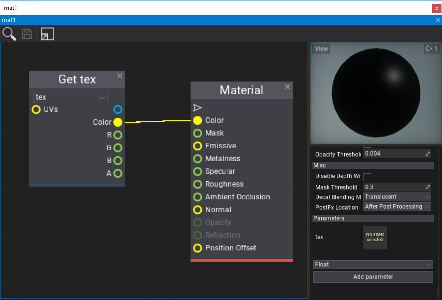
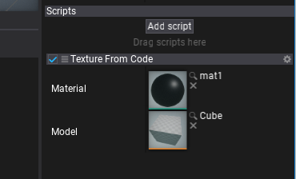

HOWTO: Generate a procedural texture

In this tutorial, you will learn how to create a simple texture from C# script code.
This sample uses the C# API method Content.CreateVirtualAsset
Tutorial
1. Create a new C# script named TextureFromCode
2. Write the texture data generating code
public class TextureFromCode : Script
{
private Texture _tempTexture;
private MaterialInstance _tempMaterialInstance;
public Material Material;
public Model Model;
public override unsafe void OnStart()
{
// Ensure that model asset is loaded
if (Model.WaitForLoaded())
return;
// Create new texture asset
var texture = Content.CreateVirtualAsset<Texture>();
_tempTexture = texture;
var initData = new TextureBase.InitData();
initData.Width = 64;
initData.Height = 64;
initData.ArraySize = 1;
initData.Format = PixelFormat.R8G8B8A8_UNorm;
var data = new byte[initData.Width * initData.Height * PixelFormatExtensions.SizeInBytes(initData.Format)];
fixed (byte* dataPtr = data)
{
// Generate pixels data (linear gradient)
var colorsPtr = (Color32*)dataPtr;
for (int y = 0; y < initData.Height; y++)
{
float t1 = (float)y / initData.Height;
var c1 = Color32.Lerp(Color.Red, Color.Blue, t1);
var c2 = Color32.Lerp(Color.Yellow, Color.Green, t1);
for (int x = 0; x < initData.Width; x++)
{
float t2 = (float)x / initData.Width;
colorsPtr[y * initData.Width + x] = Color32.Lerp(c1, c2, t2);
}
}
}
initData.Mips = new[]
{
// Initialize mip maps data container description
new TextureBase.InitData.MipData
{
Data = data,
RowPitch = data.Length / initData.Height,
SlicePitch = data.Length
},
};
if (texture.Init(ref initData))
return;
// Use a dynamic material instance with a texture to sample
var material = Material.CreateVirtualInstance();
_tempMaterialInstance = material;
material.SetParameterValue("tex", texture);
// Add a model actor and use the dynamic material for rendering
var staticModel = Actor.GetOrAddChild<StaticModel>();
staticModel.Model = Model;
staticModel.SetMaterial(0, material);
}
public override void OnDestroy()
{
// Ensure to cleanup resources
FlaxEngine.Object.Destroy(ref _tempTexture);
FlaxEngine.Object.Destroy(ref _tempMaterialInstance);
}
}
3. Create the material
Create a simple material that contains a public texture parameter named tex. It's used by the script to assign a texture to draw.

4. Link the material and model
Add created script TextureFromCode to an actor in your scene (or create a new one for it). Then select the actor and assign the model and created material (as shown in a picture below).

5. Test it out!
Press Play (or F5) and see the results!